| 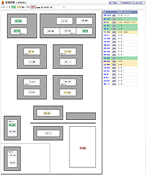 |
在席状況
ユーザの在席状況や施設の利用状況の確認ができます。 |
|---|---|
| 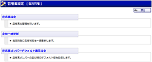 |
管理者設定メニュー
管理者グループに所属するユーザのみ使用可能なメニュー画面です。 座席表設定の機能へ遷移できます。 |
| 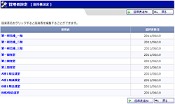 |
座席表設定
登録済みの座席表を一覧表示します。 座席表登録の機能又は、座席表編集の機能へ遷移できます。 |
| 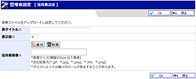 |
座席表登録
座席表の元になる画像を登録することができます。 座席表へのユーザや施設の配置は座席表編集の機能で行うができます。 |
| 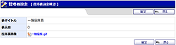 |
座席表登録確認
座席表の登録確認ができます。 |
| 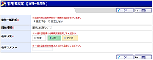 |
定時一括更新
在席状況を定時に一括更新する機能の設定を行います。 |
| 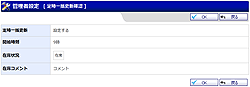 |
定時一括更新確認
在席状況を定時に一括更新する機能の設定確認を行います。 |
| 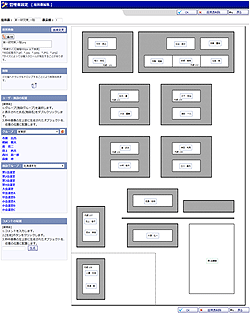 |
座席表編集
ドラッグ&ドロップで座席表にユーザや施設を自由に配置することができます。 |
| 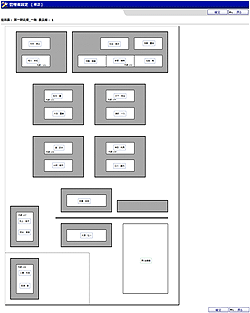 |
座席表編集確認
座席表編集確認し座席表を登録、編集します。 |
| 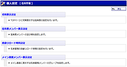 |
個人設定メニュー
在席管理の個人設定を行う機能のメニュー画面です。 |
| 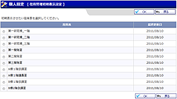 |
初期表示設定
在席状況で初期表示する座席表を選択します。 |
| 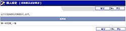 |
初期表示設定確認
選択した初期表示する座席表を確認できます。 |
| 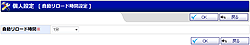 |
自動リロード設定
在席状況画面の自動リロードを設定を行います。 |
 |
自動リロード設定確認
在席状況画面の自動リロードを設定確認を行います。 |
| 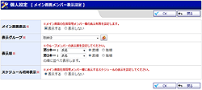 |
メイン画面メンバー表示設定
メイン画面在席管理メンバー欄の表示設定を行います。 |
| 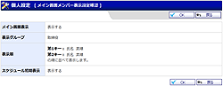 |
メイン画面メンバー表示設定確認
メイン画面在席管理メンバー欄の表示設定の確認を行います。 |
| 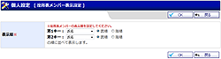 |
座席表メンバー表示設定
座席表に配置されているメンバー一覧の並び順に関する設定を行います。 |
| 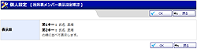 |
座席表メンバー表示設定確認
座席表に配置されているメンバー一覧の並び順に関する設定の確認を行います。 |